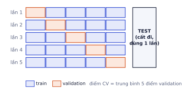
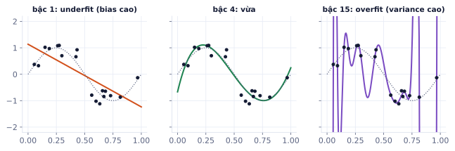
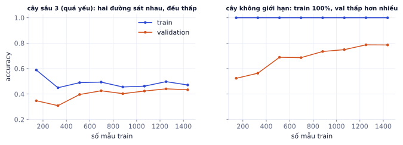
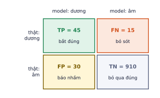
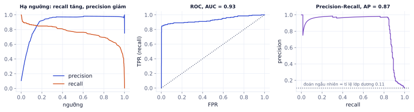
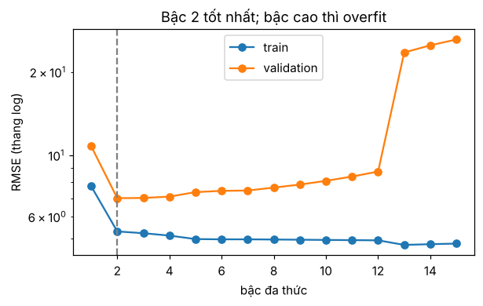

Một model 97% accuracy có thể vô dụng, còn model 80% có thể tuyệt vời. Mọi thứ phụ thuộc vào cách bạn chia dữ liệu, chọn metric và kiểm tra rò rỉ. Đây là phần hay bị hỏi nhất khi phỏng vấn ML, và cũng là phần phân biệt người làm thật với người chỉ chạy model.fit().
Train, validation, test
Vì sao cần học
Điều bạn muốn biết là: model chạy trên dữ liệu mới (khách hàng tháng sau, ảnh người dùng gửi lên) tốt đến đâu. Dữ liệu mới thì chưa có, nên ta giả lập bằng cách giấu một phần dữ liệu đi. Cách giấu quyết định con số bạn báo cáo có đáng tin hay không.
Ba tập, ba vai trò
Tập
Dùng để
Được nhìn bao nhiêu lần
Tỉ lệ thường dùng
Train
học tham số (w, b, trọng số mạng)
thoải mái
60–80%
Validation
chọn siêu tham số, chọn model, early stopping
nhiều lần
10–20%
Test
báo cáo kết quả cuối
một lần
10–20%
Tham số (parameter) là thứ model tự học từ dữ liệu. Siêu tham số (hyperparameter) là thứ bạn chọn trước khi train: learning rate, λ của regularization, độ sâu cây, số lớp. Bạn chọn siêu tham số bằng cách thử nhiều giá trị và xem điểm validation.
Vì sao test chỉ được nhìn một lần
Mỗi lần bạn chỉnh model dựa trên điểm test, tập test bị "học" một chút. Thử 50 cấu hình rồi chọn cái có điểm test cao nhất thì bạn đã dùng test làm validation: con số báo cáo sẽ lạc quan hơn thực tế, vì một phần cái "tốt" đó chỉ là may mắn trên đúng mẫu test này.
Ví dụ từng bước
Một nhóm thử 100 bộ siêu tham số, mỗi lần nhìn điểm test, chọn bộ tốt nhất: 85.3%. Khi triển khai, accuracy thật khoảng 82%. 3 điểm chênh đó không phải lỗi của model mà là do quy trình đánh giá. Nếu họ chọn trên validation rồi đo test một lần, con số báo cáo sẽ gần 82%.
Cross-validation k-fold
Khi dữ liệu ít (vài trăm đến vài nghìn mẫu), một tập validation 20% quá nhỏ và quá "may rủi". k-fold chia phần train thành k phần, lần lượt lấy mỗi phần làm validation, train trên k − 1 phần còn lại, rồi lấy trung bình k điểm.

5-fold: mỗi mẫu được làm validation đúng một lần. Tập test vẫn đứng ngoài, dùng một lần ở cuối.
fromsklearn.datasetsimportmake_classificationfromsklearn.linear_modelimportLogisticRegressionfromsklearn.model_selectionimportcross_val_score,StratifiedKFoldX_train,y_train=make_classification(n_samples=600,n_features=20,n_informative=5,weights=[0.7],random_state=0)model=LogisticRegression(max_iter=1000)cv=StratifiedKFold(n_splits=5,shuffle=True,random_state=0)scores=cross_val_score(model,X_train,y_train,cv=cv,scoring="f1")print(f"F1 = {scores.mean():.3f} ± {scores.std():.3f}")# báo cáo cả độ lệch giữa các fold, không chỉ trung bình
Kết quả khi chạy
F1 = 0.799 ± 0.037
Các kiểu chia cần biết:
Kiểu
Khi nào
KFold
hồi quy, dữ liệu độc lập
StratifiedKFold
phân loại, nhất là khi lớp mất cân bằng: mỗi fold giữ đúng tỉ lệ lớp
GroupKFold
nhiều mẫu thuộc cùng một nhóm (cùng bệnh nhân, cùng người dùng, cùng video)
TimeSeriesSplit
dữ liệu theo thời gian: luôn train trên quá khứ, validate trên tương lai
Tự kiểm tra nhanh
1.200 mẫu train, 4-fold.
Rò rỉ dữ liệu (data leakage)
Vì sao cần học
Rò rỉ là lỗi nguy hiểm nhất trong ML vì nó không báo lỗi: mọi thứ chạy, điểm rất đẹp, và chỉ sụp khi lên production. Nhiều cuộc thi Kaggle và nhiều bài báo đã phải rút lại kết quả vì rò rỉ.
Rò rỉ là khi thông tin từ validation/test, hoặc từ "tương lai", lọt vào lúc train. Các dạng hay gặp:
Dạng
Ví dụ
Cách tránh
Tiền xử lý trên toàn bộ dữ liệu
StandardScaler().fit(X) hoặc chọn đặc trưng trước khi chia
fit trên train, dùng Pipeline
Chia ngẫu nhiên dữ liệu thời gian
dự đoán doanh thu tháng 6 nhưng train có tháng 7
chia theo thời gian
Đặc trưng chứa đáp án
cột "ngày hoàn tiền" khi dự đoán "có hoàn hàng không"
hỏi: lúc dự đoán thật, cột này đã có chưa?
Trùng lặp
cùng một ảnh (hoặc ảnh crop/resize) ở cả train và test
khử trùng trước khi chia
Nhóm
nhiều ảnh của cùng bệnh nhân ở cả train và test
GroupKFold, chia theo nhóm
Ví dụ từng bước
Rò rỉ từ chọn đặc trưng, trên dữ liệu hoàn toàn ngẫu nhiên. 100 mẫu, 5.000 đặc trưng là nhiễu thuần, nhãn tung đồng xu. Không có gì để học, accuracy đúng phải khoảng 50%.
importnumpyasnpfromsklearn.feature_selectionimportSelectKBest,f_classiffromsklearn.pipelineimportmake_pipelinerng=np.random.default_rng(0)X=rng.normal(size=(100,5000))# 5.000 đặc trưng nhiễu thuầny=rng.integers(0,2,size=100)# nhãn tung đồng xu# SAI: chọn 20 đặc trưng "tốt nhất" trên toàn bộ dữ liệu, rồi mới cross-validateXs=SelectKBest(f_classif,k=20).fit_transform(X,y)cross_val_score(LogisticRegression(),Xs,y,cv=cv).mean()# 0.87 (!)# ĐÚNG: việc chọn đặc trưng nằm trong pipeline, chạy lại trên từng fold trainpipe=make_pipeline(SelectKBest(f_classif,k=20),LogisticRegression())cross_val_score(pipe,X,y,cv=cv).mean()# 0.50
Kết quả khi chạy
0.8699999999999999
0.5
87% trên dữ liệu ngẫu nhiên: bước chọn đặc trưng đã "nhìn" nhãn của cả các mẫu validation, nên tìm được 20 cột nhiễu tình cờ khớp với nhãn.
Ghi nhớ: mọi bước học từ dữ liệu (chuẩn hóa, điền thiếu, chọn đặc trưng, giảm chiều) phải nằm bên trong vòng cross-validation. Pipeline của scikit-learn đảm bảo điều đó. Nếu kết quả tốt đến mức khó tin, hãy đi tìm rò rỉ trước khi ăn mừng.
Lỗi hay gặp
Dữ liệu thời gian chia ngẫu nhiên. Dự đoán giá cổ phiếu ngày mai, chia ngẫu nhiên 80/20: model thấy ngày 15 và ngày 17 trong train, đoán ngày 16 trong test rất dễ. Chạy thật thì không có ngày 17. Với mọi dữ liệu có thời gian (doanh số, log hệ thống, giao dịch), luôn train trên quá khứ, test trên giai đoạn sau đó.
Overfitting, underfitting, bias và variance
Vì sao cần học
Khi model chưa tốt, bạn cần biết nên làm gì tiếp: thêm dữ liệu, đổi model mạnh hơn, hay regularize? Chẩn đoán đúng bias hay variance tiết kiệm hàng tuần thử mò.
Hai kiểu thất bại
Underfitting (bias cao): train tệ, val tệ. Model quá đơn giản để nắm quy luật. Ví dụ dùng đường thẳng cho dữ liệu hình sóng.
Overfitting (variance cao): train rất tốt, val tệ. Model học thuộc cả nhiễu của tập train, đổi tập train một chút là đổi hẳn dự đoán.

Cùng 18 điểm dữ liệu (đường chấm là quy luật thật). Bậc 1 quá cứng, bậc 15 đi qua gần mọi điểm nhưng dao động điên cuồng giữa các điểm.
Triệu chứng
Chẩn đoán
Nên làm
train thấp, val thấp, gần nhau
underfit
model mạnh hơn, thêm đặc trưng, train lâu hơn, giảm regularization
train cao, val thấp hơn nhiều
overfit
thêm dữ liệu, augmentation, regularization, model đơn giản hơn, early stopping
train cao, val cao, test thấp
val bị "học" hoặc test khác phân phối
xem lại quy trình chia, kiểm tra rò rỉ
Learning curve
Vẽ điểm train và validation theo kích thước tập train để chẩn đoán:

Trái: cây quyết định sâu 3 trên bộ chữ số viết tay: hai đường sát nhau ở mức thấp, thêm dữ liệu không giúp gì. Phải: cây không giới hạn: train 100%, val tăng dần theo dữ liệu, khoảng cách còn lớn.
Hai đường cách xa nhau và val còn đang đi lên: thêm dữ liệu sẽ giúp.
Hai đường sát nhau mà đều thấp: thêm dữ liệu vô ích, cần model mạnh hơn.
Đào sâu thêm
Phân rã bias–variance. Với MSE, sai số kỳ vọng trên dữ liệu mới tách được thành ba phần: bias² (model trung bình lệch khỏi quy luật thật bao nhiêu), variance (dự đoán dao động bao nhiêu khi đổi tập train), và nhiễu không thể giảm. Model phức tạp hơn giảm bias nhưng tăng variance. Deep learning hiện đại phức tạp hơn bức tranh này một chút (mạng rất lớn vẫn tổng quát tốt khi đủ dữ liệu và regularization), nhưng cách chẩn đoán bằng train/val ở trên vẫn đúng.
Metric phân loại
Vì sao cần học
Accuracy dễ hiểu nhưng thường đánh lừa. Một bộ lọc gian lận luôn trả lời "không gian lận" đạt 99% accuracy nếu chỉ 1% giao dịch là gian lận, và nó hoàn toàn vô dụng. Bạn cần metric nói được model bắt được bao nhiêu ca quan trọng và báo nhầm bao nhiêu.
Ma trận nhầm lẫn
Mọi metric phân loại nhị phân đều tính từ bốn ô:

Ví dụ 1.000 mẫu, 60 ca dương thật. Model báo dương 75 ca, trong đó 45 đúng.
Accuracy = (TP + TN) / tổng tỉ lệ đoán đúng nói chung
Precision = TP / (TP + FP) trong những gì model báo dương, bao nhiêu đúng
Recall = TP / (TP + FN) trong những ca dương thật, model bắt được bao nhiêu
F1 = 2·P·R / (P + R) trung bình điều hòa, thấp nếu một trong hai thấp
Ví dụ từng bước
Với ma trận ở hình: accuracy = (45 + 910)/1000 = 95.5%, nghe rất tốt. Nhưng precision = 45/75 = 60% (cứ 5 lần báo động thì 2 lần nhầm) và recall = 45/60 = 75% (bỏ sót một phần tư số ca dương). F1 = 2 × 0.6 × 0.75 / (0.6 + 0.75) ≈ 0.667.
So với model "luôn báo âm": accuracy = 940/1000 = 94%, chỉ kém 1.5 điểm, nhưng recall = 0. Accuracy gần như không phân biệt được hai model; recall thì có.
Chọn metric theo chi phí sai lầm
Bài toán
Ưu tiên
Vì sao
Lọc thư rác
precision
báo nhầm thư công việc là rác thì rất hại
Tầm soát ung thư
recall
bỏ sót ca bệnh nguy hiểm hơn cho đi xét nghiệm thêm
Chống gian lận
PR-AUC, recall ở precision cố định
lớp dương cực hiếm, đội kiểm tra có giới hạn
Phân loại nhiều lớp cân bằng
accuracy, macro-F1
các lớp quan trọng như nhau
ROC-AUC và PR-AUC
Hai metric không phụ thuộc ngưỡng, đo khả năng xếp hạng:
ROC-AUC: xác suất một ca dương ngẫu nhiên được chấm điểm cao hơn một ca âm ngẫu nhiên. 0.5 là đoán bừa, 1.0 là hoàn hảo.
PR-AUC (average precision): diện tích dưới đường precision–recall. Mức đoán bừa bằng tỉ lệ lớp dương, nên phản ánh đúng hơn khi lớp dương hiếm.

Bộ dữ liệu 11% dương. ROC-AUC 0.93 nghe rất cao; PR-AUC 0.87 cho thấy rõ hơn: precision bắt đầu sụp khi đòi recall trên 85%.
Nhiều lớp: macro và micro
Với K lớp, tính precision/recall/F1 cho từng lớp (coi lớp đó là dương, còn lại là âm), rồi gộp:
macro: trung bình cộng các lớp, mỗi lớp nặng như nhau. Lớp hiếm làm kém sẽ kéo điểm xuống.
weighted: trung bình có trọng số theo số mẫu mỗi lớp.
micro: gộp TP, FP, FN của mọi lớp rồi tính, bằng accuracy với phân loại đơn nhãn.
classification_report(y_true, y_pred) của scikit-learn in tất cả cùng lúc.
Lỗi hay gặp
Báo cáo accuracy trên dữ liệu mất cân bằng. Luôn in kèm tỉ lệ lớp và một baseline ngây thơ (luôn đoán lớp đông nhất). "Model đạt 96%" vô nghĩa nếu baseline đã đạt 95%.
Tự kiểm tra nhanh
Model tầm soát bệnh: 80 ca bệnh thật, model bắt được 72, và báo nhầm 48 người khỏe.
Metric hồi quy
Vì sao cần học
Với hồi quy, metric phải trả lời câu hỏi nghiệp vụ: "trung bình model sai bao nhiêu đồng?", "có hay sai rất nặng không?", "có tốt hơn đoán bằng trung bình không?".
MAE = mean(|ŷ − y|) sai trung bình, cùng đơn vị với y, bền với ngoại lai
RMSE = √mean((ŷ − y)²) phạt nặng lỗi lớn, cùng đơn vị với y
R² = 1 − SS_res / SS_tot tỉ lệ phương sai giải thích được
SS_res = Σ(y − ŷ)², SS_tot = Σ(y − ȳ)²
MAPE = mean(|ŷ − y| / |y|) sai theo phần trăm, hỏng khi y gần 0
Ví dụ từng bước
Đáp án y = [3, 5, 2, 8], dự đoán ŷ = [2.5, 5.5, 2, 6]. Sai số: [−0.5, 0.5, 0, −2].
RMSE lớn hơn MAE khá nhiều vì có một lỗi lớn (−2). Khi RMSE ≫ MAE, hãy xem các mẫu bị sai nặng.
R² = 0 nghĩa là model không hơn việc luôn đoán bằng trung bình; R² âm nghĩa là còn tệ hơn thế. R² gần 1 chưa chắc tốt nếu dữ liệu có xu hướng thời gian mạnh (đoán "giống hôm qua" cũng ra R² cao).
Ngưỡng quyết định
Vì sao cần học
Model cho ra xác suất; quyết định cuối cùng (chặn giao dịch, gửi đi xét nghiệm) cần một ngưỡng. Ngưỡng 0.5 chỉ là mặc định, hiếm khi là lựa chọn tốt nhất cho bài toán của bạn.
Hạ ngưỡng → model báo dương nhiều hơn → recall tăng, precision giảm. Nâng ngưỡng thì ngược lại.
Ví dụ từng bước
Cùng model ở hình ROC/PR, tập test 2.000 mẫu, 211 ca dương:
Ngưỡng
TP
FP
FN
Precision
Recall
0.2
179
15
32
0.923
0.848
0.3
177
6
34
0.967
0.839
0.5
163
5
48
0.970
0.773
0.7
154
3
57
0.981
0.730
Từ 0.5 xuống 0.3: bắt thêm 14 ca dương, chỉ báo nhầm thêm 1. Nếu bỏ sót đắt hơn báo nhầm, 0.3 tốt hơn hẳn mặc định.
Quy trình đúng:
Viết mục tiêu bằng con số, ví dụ "recall ≥ 95%, precision cao nhất có thể" hoặc "chi phí = 10 × FN + 1 × FP nhỏ nhất".
Quét ngưỡng trên validation, chọn ngưỡng đạt mục tiêu.
Giữ nguyên ngưỡng đó, đo một lần trên test.
Lỗi hay gặp
Chọn ngưỡng trên test. Giống chọn siêu tham số trên test: con số báo cáo sẽ lạc quan. Ngưỡng là một siêu tham số.
Tự kiểm tra nhanh
Chi phí: bỏ sót một ca gian lận tốn 500 nghìn đồng, kiểm tra nhầm một giao dịch tốn 20 nghìn đồng. Ngưỡng A cho FN = 30, FP = 100; ngưỡng B cho FN = 20, FP = 300.
Tóm tắt bài và thuật ngữ
Câu hỏi
Trả lời ngắn
Chọn siêu tham số trên tập nào?
validation (hoặc cross-validation trên train)
Test dùng mấy lần?
một lần, ở cuối
Tránh rò rỉ thế nào?
mọi bước học từ dữ liệu nằm trong Pipeline; chia theo thời gian/nhóm khi cần
Train cao, val thấp?
overfit: thêm dữ liệu, regularize, model đơn giản hơn
Train thấp, val thấp?
underfit: model mạnh hơn, đặc trưng tốt hơn
Lớp mất cân bằng?
precision, recall, F1, PR-AUC, kèm baseline
Chọn ngưỡng?
theo chi phí nghiệp vụ, trên validation
Thuật ngữ
Nghĩa
hyperparameter
siêu tham số, chọn trước khi train
cross-validation
đánh giá xoay vòng qua k phần dữ liệu
stratified
giữ tỉ lệ lớp khi chia
data leakage
thông tin ngoài tập train lọt vào lúc train
pipeline
chuỗi bước tiền xử lý + model được fit cùng nhau
bias / variance
lệch hệ thống / dao động theo tập train
learning curve
điểm train và val theo kích thước dữ liệu
confusion matrix
bảng TP, FP, FN, TN
precision / recall
độ chính xác khi báo dương / độ phủ ca dương
F1
trung bình điều hòa của precision và recall
ROC-AUC / PR-AUC
diện tích dưới đường ROC / precision–recall
macro / micro average
trung bình theo lớp / gộp mọi lớp
MAE / RMSE / R²
các metric hồi quy
threshold
ngưỡng biến xác suất thành quyết định
Ô tự chấm đã giải đúng0 / 6
Bài 1
Metric từ ma trận nhầm lẫn
tính tay
Model phát hiện gian lận trên 1000 giao dịch: TP = 40, FP = 10, FN = 20, TN = 930.
Lời giải
Accuracy 0.97 nhìn đẹp, nhưng một model luôn đoán "không gian lận" cũng đạt 940/1000 = 0.94. Recall 0.667 nghĩa là bỏ sót 1/3 ca gian lận. F1 = 2·0.8·0.667 / 1.467 ≈ 0.727.
Bài 2
MAE và RMSE
tính tay
Sai số (ŷ − y) của 4 dự đoán: 1, −2, 3, −4.
Lời giải
MAE = (1 + 2 + 3 + 4) / 4 = 2.5. RMSE = √((1 + 4 + 9 + 16) / 4) = √7.5 ≈ 2.739. RMSE luôn ≥ MAE, chênh càng nhiều khi có lỗi lớn.
Bài 3
Tìm rò rỉ
khái niệm
Mỗi đoạn dưới có một lỗi rò rỉ. Chỉ ra lỗi và cách sửa.
# (a)X=StandardScaler().fit_transform(X)Xtr,Xte,ytr,yte=train_test_split(X,y)# (b) dự đoán giá cổ phiếu ngày maiXtr,Xte,ytr,yte=train_test_split(X_by_day,y_by_day,shuffle=True)# (c) dự đoán khách có rời bỏ dịch vụ khôngfeatures=["tuổi","số đơn 6 tháng","ngày hủy tài khoản"]# (d) phân loại ảnh X-quang, mỗi bệnh nhân có 5 ảnhXtr,Xte=train_test_split(all_images,test_size=0.2)
Lời giải
(a) Scaler đã nhìn thấy test. Sửa: chia trước, fit scaler trên train, hoặc dùng make_pipeline(StandardScaler(), model).
(b) Xáo trộn dữ liệu thời gian làm train chứa tương lai. Sửa: chia theo mốc thời gian hoặc dùng TimeSeriesSplit.
(c) "ngày hủy tài khoản" chỉ có khi khách đã rời bỏ, nên nó chứa đáp án. Bỏ cột này.
(d) Ảnh của cùng bệnh nhân rơi vào cả hai tập, model nhận ra bệnh nhân thay vì bệnh. Sửa: chia theo bệnh nhân bằng GroupShuffleSplit hoặc GroupKFold.
Bài 4
Chọn ngưỡng tối ưu F1
code
Viết hàm nhận y_val và proba_val, thử mọi ngưỡng từ 0.05 đến 0.95 (bước 0.01), trả về ngưỡng cho F1 cao nhất. Áp dụng ngưỡng đó cho test và so với ngưỡng 0.5.
Code tham khảo
importnumpyasnpfromsklearn.datasetsimportmake_classificationfromsklearn.linear_modelimportLogisticRegressionfromsklearn.model_selectionimporttrain_test_splitfromsklearn.metricsimportf1_score# dữ liệu mất cân bằng để thử: 10% lớp dươngX,y=make_classification(n_samples=3000,n_features=20,n_informative=6,weights=[0.9],flip_y=0.03,random_state=1)X_tr,X_tmp,y_tr,y_tmp=train_test_split(X,y,test_size=0.4,stratify=y,random_state=0)X_val,X_test,y_val,y_test=train_test_split(X_tmp,y_tmp,test_size=0.5,stratify=y_tmp,random_state=0)model=LogisticRegression(max_iter=1000).fit(X_tr,y_tr)defbest_threshold(y_val,proba_val):ths=np.arange(0.05,0.96,0.01)scores=[f1_score(y_val,proba_val>=t)fortinths]i=int(np.argmax(scores))returnths[i],scores[i]t,f=best_threshold(y_val,model.predict_proba(X_val)[:,1])p_test=model.predict_proba(X_test)[:,1]print(f"ngưỡng {t:.2f}: F1 test {f1_score(y_test,p_test>=t):.3f} | ngưỡng 0.5: {f1_score(y_test,p_test>=0.5):.3f}")
Kết quả khi chạy
ngưỡng 0.25: F1 test 0.681 | ngưỡng 0.5: 0.579
Bài 5
Dự báo doanh số: chia ngẫu nhiên hay theo thời gian
ứng dụng
Dùng: train/validation/test, rò rỉ dữ liệu theo thời gian.
Bạn dự báo doanh số ngày mai từ doanh số 7 ngày gần nhất. Dữ liệu 2 năm có xu hướng tăng và mùa vụ. So hai cách đánh giá cùng một model: chia ngẫu nhiên 80/20, và chia theo thời gian (80% ngày đầu để train, 20% ngày cuối để test). Cách nào cho MAE thấp hơn, và cách nào trung thực với lúc dùng thật?
importnumpyasnpfromsklearn.ensembleimportRandomForestRegressorfromsklearn.metricsimportmean_absolute_errorfromsklearn.model_selectionimporttrain_test_splitrng=np.random.default_rng(0)t=np.arange(730)sales=100+0.15*t+20*np.sin(2*np.pi*t/365)+8*np.sin(2*np.pi*t/7)+rng.normal(0,5,730)X=np.column_stack([sales[i:i+7]foriinrange(723)]).T# mỗi hàng: 7 ngày trướcy=sales[7:]# ngày cần dự báo# TODO: mae_ngau_nhien, mae_thoi_gian (RandomForestRegressor(n_estimators=100, random_state=0))
Code của bạn
Viết code vào chỗ trống rồi bấm Chạy.
Gợi ý
Chia theo thời gian: cut = int(0.8 * len(y)), train là [:cut], test là [cut:]. Không xáo trộn.
Code tham khảo
defdanh_gia(X_tr,X_te,y_tr,y_te):m=RandomForestRegressor(n_estimators=100,random_state=0).fit(X_tr,y_tr)returnmean_absolute_error(y_te,m.predict(X_te))mae_ngau_nhien=danh_gia(*train_test_split(X,y,test_size=0.2,random_state=0))cut=int(0.8*len(y))mae_thoi_gian=danh_gia(X[:cut],X[cut:],y[:cut],y[cut:])print(f"chia ngẫu nhiên: MAE {mae_ngau_nhien:.1f} chia theo thời gian: MAE {mae_thoi_gian:.1f}")
Kết quả khi chạy
chia ngẫu nhiên: MAE 5.4 chia theo thời gian: MAE 7.2
Chia ngẫu nhiên thì những ngày ngay trước và ngay sau một ngày test đều nằm trong train: model "nhìn thấy tương lai" và điểm đẹp giả. Rừng ngẫu nhiên lại không ngoại suy được xu hướng tăng ra ngoài vùng đã thấy, nên khi chia theo thời gian sai số lớn hơn hẳn. Với dữ liệu theo thời gian, luôn để phần cuối làm test: đó mới là tình huống khi dùng thật.
Bài 6
Chọn độ phức tạp bằng validation
ứng dụng
Dùng: overfitting, underfitting, bias và variance, tập validation.
Dữ liệu: nhiệt độ ngoài trời và lượng điện tiêu thụ, quan hệ cong. Fit đa thức bậc 1 tới 15, tính RMSE trên train và validation cho từng bậc, vẽ hai đường, và chọn bậc tốt nhất theo validation.
importnumpyasnpimportmatplotlib.pyplotaspltfromsklearn.pipelineimportmake_pipelinefromsklearn.preprocessingimportPolynomialFeatures,StandardScalerfromsklearn.linear_modelimportLinearRegressionfromsklearn.metricsimportmean_squared_errorrng=np.random.default_rng(2)temp=rng.uniform(10,40,60)power=50+0.15*(temp-24)**2+rng.normal(0,6,60)x_tr,y_tr=temp[:20,None],power[:20]# 20 ngày để trainx_va,y_va=temp[40:,None],power[40:]# 20 ngày validation; 20 ngày giữa để dành làm test# TODO: với bậc d = 1..15: fit, rmse train/val; bac_tot
bac=range(1,16)rmse_tr,rmse_va=[],[]fordinbac:m=make_pipeline(PolynomialFeatures(d),StandardScaler(),LinearRegression()).fit(x_tr,y_tr)rmse_tr.append(np.sqrt(mean_squared_error(y_tr,m.predict(x_tr))))rmse_va.append(np.sqrt(mean_squared_error(y_va,m.predict(x_va))))bac_tot=int(np.argmin(rmse_va)+1)fig,ax=plt.subplots(figsize=(6,3.4))ax.plot(bac,rmse_tr,marker="o",label="train");ax.plot(bac,rmse_va,marker="o",label="validation")ax.set_yscale("log");ax.axvline(bac_tot,color="gray",ls="--")ax.set(xlabel="bậc đa thức",ylabel="RMSE (thang log)",title=f"Bậc {bac_tot} tốt nhất; bậc cao thì overfit");ax.legend()print("bậc tốt nhất:",bac_tot)
Kết quả khi chạy
bậc tốt nhất: 2

Bậc 1 (đường thẳng) sai nhiều cả train lẫn validation: underfit, bias cao. Bậc cao thì train ngày càng tốt nhưng validation tệ dần: overfit, variance cao. Bậc được chọn nằm ở đáy đường validation.
Chỉ khoảng 2% giao dịch là gian lận. So ba "model": luôn đoán "không gian lận", logistic regression thường, và logistic regression với class_weight="balanced". Với mỗi model in accuracy, precision, recall, F1 trên test. Model nào bạn đưa vào dùng?
importnumpyasnpfromsklearn.datasetsimportmake_classificationfromsklearn.model_selectionimporttrain_test_splitfromsklearn.dummyimportDummyClassifierfromsklearn.linear_modelimportLogisticRegressionfromsklearn.metricsimportaccuracy_score,precision_score,recall_score,f1_score,average_precision_scoreX,y=make_classification(n_samples=20000,n_features=12,n_informative=5,weights=[0.98],flip_y=0.005,random_state=0)X_tr,X_te,y_tr,y_te=train_test_split(X,y,test_size=0.3,stratify=y,random_state=0)# TODO: kq[tên] = (accuracy, precision, recall, f1) cho 3 model
Code của bạn
Viết code vào chỗ trống rồi bấm Chạy.
Gợi ý
DummyClassifier(strategy="most_frequent"). Precision của model không đoán lớp 1 lần nào là 0/0: thêm zero_division=0.
luôn không acc 0.977 precision 0.00 recall 0.00 F1 0.00
logistic acc 0.989 precision 0.94 recall 0.55 F1 0.69
balanced acc 0.890 precision 0.15 recall 0.85 F1 0.26
PR-AUC logistic: 0.719
Model "luôn không" đạt accuracy 98% mà không bắt được vụ gian lận nào. class_weight="balanced" bắt được nhiều vụ hơn hẳn (recall cao) đổi lại nhiều báo động nhầm (precision thấp). Chọn model nào tùy chi phí: xem bài tiếp theo.
Bài 8
Chọn ngưỡng theo chi phí thật
ứng dụng
Dùng: ngưỡng quyết định, ma trận nhầm lẫn, chọn ngưỡng trên validation rồi báo cáo trên test.
Tiếp bài trước. Với ngân hàng, bỏ sót một vụ gian lận mất trung bình 2 triệu; chặn nhầm một giao dịch thật mất 100 nghìn (gọi điện xác minh, khách khó chịu). Chia thêm tập validation từ train, quét ngưỡng 0,01–0,99 trên xác suất của logistic regression thường, chọn ngưỡng có tổng chi phí nhỏ nhất trên validation, rồi báo chi phí trên test ở ngưỡng đó và ở ngưỡng mặc định 0,5.
p_va = model.predict_proba(X_va)[:, 1], thử ths = np.linspace(0.01, 0.99, 99) và lấy ths[np.argmin([chi_phi(y_va, p_va, t) for t in ths])]. Không chọn ngưỡng trên test.
Code tham khảo
ths=np.linspace(0.01,0.99,99)p_va=model.predict_proba(X_va)[:,1]nguong_tot=ths[np.argmin([chi_phi(y_va,p_va,t)fortinths])]p_te=model.predict_proba(X_te)[:,1]cp_test_tot,cp_test_05=chi_phi(y_te,p_te,nguong_tot),chi_phi(y_te,p_te,0.5)print(f"ngưỡng tốt nhất (validation) = {nguong_tot:.2f}")print(f"chi phí test: {cp_test_tot/1000:.0f} triệu ở ngưỡng đó, {cp_test_05/1000:.0f} triệu ở ngưỡng 0,5")
Kết quả khi chạy
ngưỡng tốt nhất (validation) = 0.08
chi phí test: 82 triệu ở ngưỡng đó, 124 triệu ở ngưỡng 0,5
Bỏ sót đắt gấp 20 lần chặn nhầm, nên ngưỡng tối ưu thấp hơn 0,5 nhiều: chấp nhận gọi xác minh nhiều hơn để bắt thêm gian lận. Ngưỡng là quyết định kinh doanh, không phải mặc định của thư viện.
Báo cáo đánh giá đầy đủ
Lấy model phân loại ở bài P1.1 (Breast Cancer) và viết một báo cáo đánh giá như ở công ty thật.
Các bước
Chia train / val / test = 60 / 20 / 20, có stratify.
Dùng StratifiedKFold(5) trên train để chọn C của LogisticRegression theo ROC-AUC.
Vẽ learning curve (sklearn.model_selection.learning_curve) và nhận xét: đang overfit hay underfit?
Trên validation: vẽ ROC và PR curve, chọn ngưỡng sao cho recall ≥ 0.97 với precision cao nhất.
Áp ngưỡng đó một lần trên test: báo cáo confusion matrix, precision, recall, F1, ROC-AUC.
Liệt kê 5 ca model sai trên test (in đặc trưng và xác suất), đoán vì sao sai.
Mẫu báo cáo
## Kết quả trên test (ngưỡng 0.31, chọn trên validation)
| Metric | Giá trị |
|---|---|
| Recall | ... |
| Precision | ... |
| ROC-AUC | ... |
## Model sai ở đâu## Nên làm gì tiếp
Xong khi
Ngưỡng được chọn hoàn toàn trên validation, test chỉ dùng một lần.
Có 3 biểu đồ: learning curve, ROC, PR.
Báo cáo trả lời được: model sai ở đâu, vì sao, nên cải thiện gì tiếp.